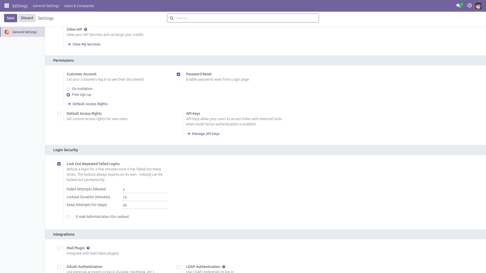
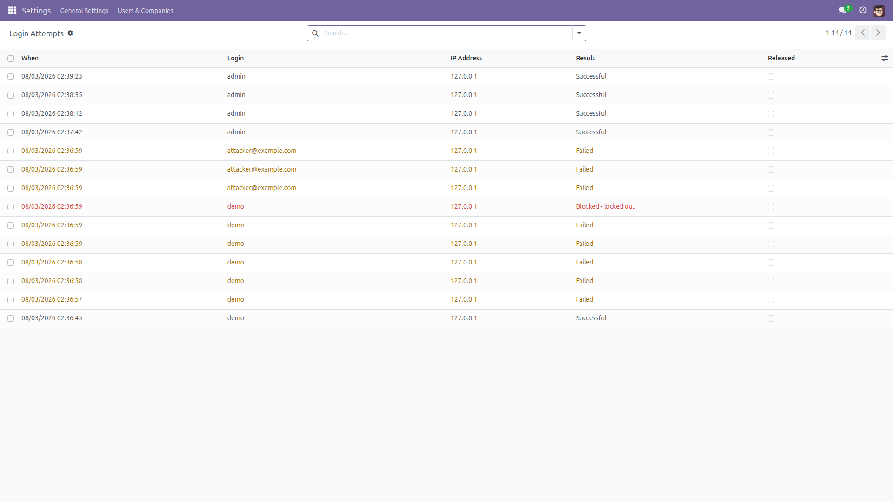
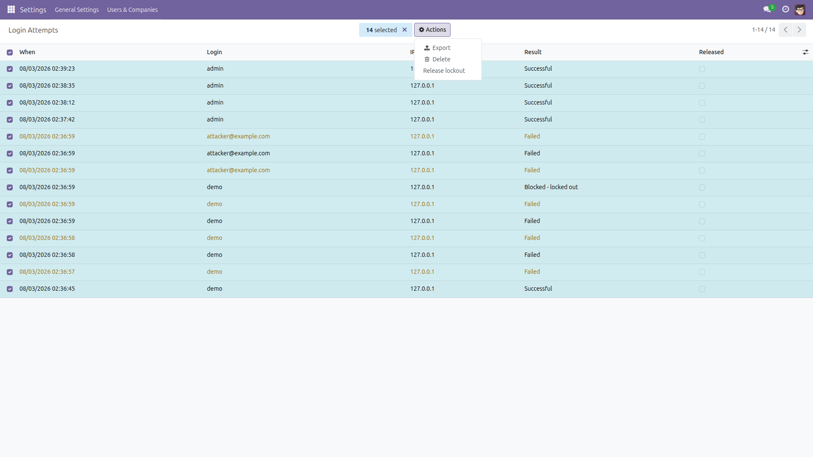
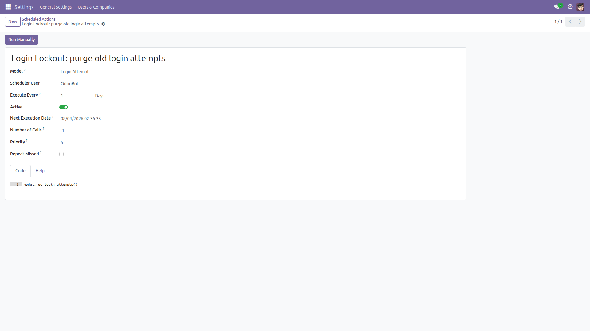

Login Attempt Throttling and Account Lockout
Stop password guessing on the Odoo login screen. Every attempt recorded, repeat failures locked out, nobody locked out for good.
Odoo 14.0 · 15.0 · 16.0 · 17.0 · 18.0 · 19.0 | Free and open source (LGPL-3)
The problem
Out of the box, Odoo accepts an unlimited number of wrong passwords on the login screen. Somebody who knows one of your users' e-mail addresses can run a dictionary against it all night: nothing slows them down, nothing is written down, and nobody is told. Odoo does have a small built-in cooldown, but it counts per IP address, lives in memory only, and is not shared between workers — so it is lost on every restart.
This module adds the missing brake, and the paper trail that goes with it.
What it does
- Records every login attempt — the login that was used, the source IP address, and the outcome: successful, failed, or blocked while locked out.
- Locks out repeat failures. After a configurable number of failures for the same login (5 by default), that login is refused for a configurable number of minutes (15 by default) — even if the correct password is supplied.
- Every lockout expires by itself. There is no permanent lock, and continuing to knock at a locked login does not extend the lockout already running. An attacker who keeps trying can still trigger a fresh lockout each time one lapses, which is why any administrator can release a lockout instantly.
- A successful login clears the counter, so an honest user who mistypes a few times and then gets it right starts from a clean slate.
- Unknown logins are throttled identically, so the login screen cannot be used to work out which e-mail addresses are real accounts on your database.
- Upper case and lower case share one counter — changing the capitalisation of a login does not buy an attacker a fresh allowance.
- Optional e-mail alert to every Settings administrator the moment a lockout starts.
- Release a lockout in one click when a colleague is locked out and cannot wait.
- A scheduled action purges old attempts (after 30 days by default), so the log cannot grow without bound.
Screenshots

The whole policy lives in one block of General Settings: how many failures are allowed, how long the lockout lasts, how long attempts are kept, and whether administrators are e-mailed.

Every attempt with its login, source IP and outcome. Here the demo account signed in, then failed five times and was blocked on the sixth try — and a login that does not exist on this database is throttled in exactly the same way.

A locked-out colleague does not have to wait: select their failed attempts and use Release lockout. The rows are kept and flagged as released, so the audit trail survives.

A scheduled action purges attempts older than the retention period.
Installation
- Copy the
auth_login_lockout folder into your Odoo add-ons directory.
- Restart the Odoo service.
- Log in as an administrator and go to Apps.
- Click Update Apps List (you may need to switch on developer mode first).
- Search for Login Attempt Throttling and Account Lockout and press Install. Protection is active immediately, with the default policy below.
Configuration
- Go to Settings → General Settings and scroll to the Login Security block.
- Lock Out Repeated Failed Logins turns the whole feature on and off. It is on after installation. Switching it off stops both the lockouts and the recording.
- Failed Attempts Allowed — how many failures for the same login are tolerated before it is locked. Default 5.
- Lockout Duration (minutes) — how long the login stays refused. Default 15.
- Keep Attempts For (days) — how long recorded attempts are kept before the scheduled action deletes them. Default 30.
- E-mail Administrators On Lockout — when ticked, every user in the Settings group receives a message as soon as a lockout starts. Off by default.
- Press Save. Changes apply to the very next login attempt; no restart is needed.
Usage
- There is nothing to do day to day. Once installed, the module counts failures and locks logins out on its own.
- To review activity, go to Settings → Users and Companies → Login Attempts. The list is available to Settings administrators only.
- Use the ready-made filters to narrow the list: Failed, Blocked By Lockout, Successful, Still Counting, Released, Today and Last 7 Days. Group by login, result, IP address or date to see who is being targeted.
- A locked-out user simply sees the ordinary "wrong login or password" message. That is deliberate: telling the visitor that a lockout is running, or how long it lasts, would hand an attacker your policy. The real reason is written to the server log.
- To let a locked-out colleague straight back in, open Login Attempts, filter on Still Counting, select their failed rows, and choose Release lockout from the Actions menu. The rows stay in the list, flagged as released, and stop counting towards the lockout.
- Otherwise just wait: the lockout lifts on its own once the configured number of minutes has passed.
What this module does not do
- It guards the login endpoint — the web login form and the
authenticate call used by XML-RPC and JSON-RPC clients. It is not a network-level rate limiter: a flood of requests still reaches your server, so put a reverse proxy in front of Odoo if you need to absorb volumetric attacks.
- Re-validating an already known user id (the internal password check used by some API paths and session checks) is not throttled, because reaching it requires knowing a valid user id in the first place.
- The lockout is per login, not per IP address. That is on purpose: locking per IP would punish everybody behind a shared office connection, and would be trivial to evade from a botnet. The trade-off is that an attacker can cause a real user to be temporarily locked out — which is why blocked attempts never extend a lockout, and why any administrator can release one immediately.
- An attacker can keep a login locked out by triggering a new lockout each time the previous one lapses. Nothing can prevent that while the policy is keyed on the login rather than the source address. Practical answers: release the lockout from the attempt list, block the source at your reverse proxy, or switch the policy off while you deal with it.
- The log stores what was typed in the login box, verbatim. If somebody types their password into the login field by mistake, it will appear in the attempt list, so treat the log as sensitive. It is restricted to Settings administrators, and the retention period bounds how long it is kept. Odoo's own server log already records the login of every failed attempt in the same way.
- It does not add two-factor authentication, password strength rules or CAPTCHA.
- The optional alert uses Odoo's outgoing mail queue, so an outgoing mail server must be configured for it to be delivered.
Version notes
- The behaviour is identical on every supported series. Only the screens differ slightly.
- On 14.0, 15.0 and 16.0 the Login Security options appear in the older General Settings layout; the settings themselves are exactly the same.
- On 18.0 and 19.0 the purge scheduled action has no "Number of Calls" field, because Odoo removed it. The purge still runs once a day.
- The screenshots on this page were taken on Odoo 17.0.
Support
Questions, bug reports and suggestions are welcome.
Write to f.ashraf.dev1@gmail.com — please mention your Odoo version.
Published by Farhan Ashraf. Licensed under LGPL-3: free to use, free to modify.